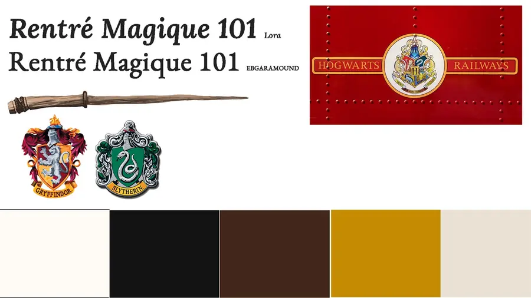
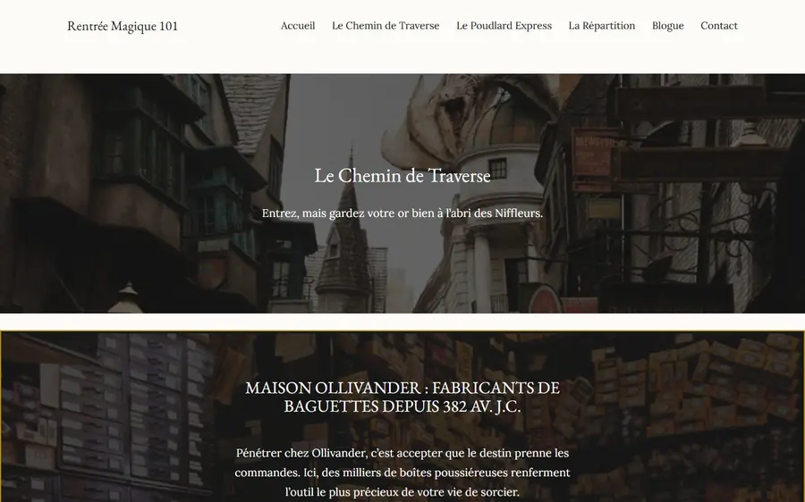
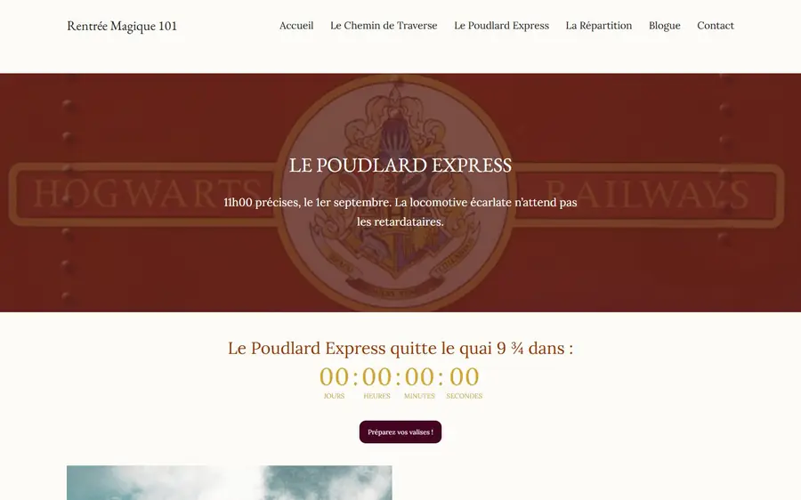
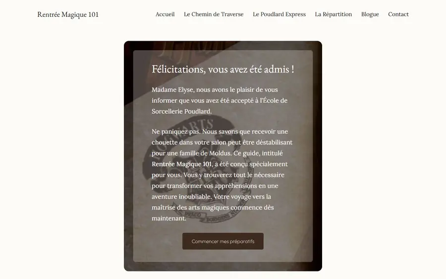
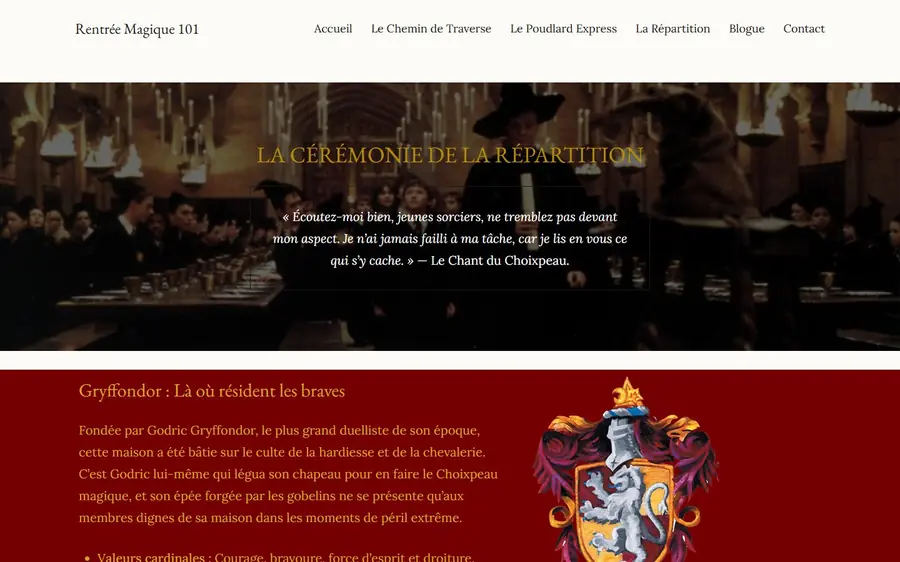

Projet 03 · Hiver 2026 · Projet de session
Rentrée Magique 101
Un site WordPress qui guide les nouveaux élèves d’une école de sorcellerie.
- Web
Mon rôle
Seul : thème, contenu et design.
Outils
- WordPress (thème Frost)
- CSS
- HurryTimer
Côté coulisses
-
Brief
Livrer un site WordPress complet, en projet final du cours Système de gestion de contenu 1.
-
Plan
Un moodboard (typographies, blasons, palette) et un parcours : lettre d’admission, Chemin de Traverse, train de la rentrée, répartition dans les maisons, blogue.

Le moodboard -
Production
Le thème Frost retravaillé en CSS pour une esthétique « Dark Academia », avec un compte à rebours avant le départ du train.

Le Chemin de Traverse 
Le train, avec son compte à rebours -
Résultat
Site en ligne. Note : 90 %.

La lettre d’admission 
La répartition dans les maisons
Projet scolaire inspiré de l’univers de Harry Potter.